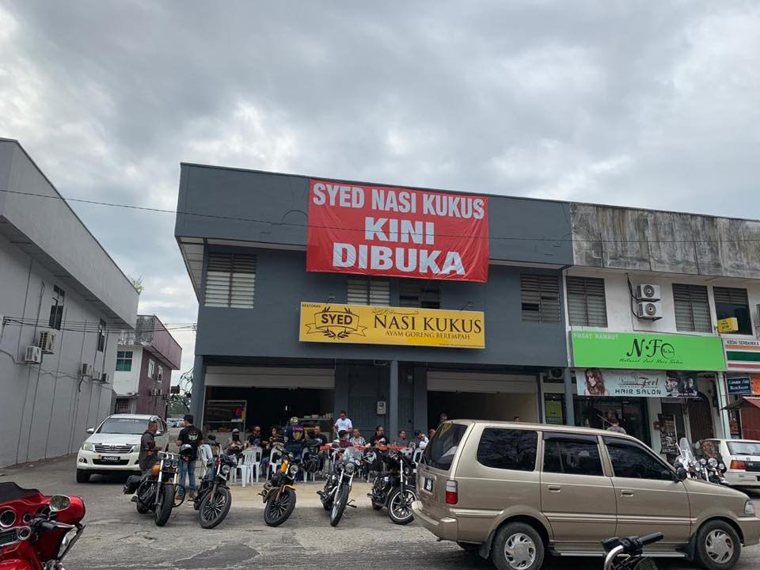

Business Profile.
|  | Nasi Ayam Syed or it is well known as Nasi Kukus open March 29 2018. Nasi Ayam syed not only serve nasi ayam, theres many kind of menu such as nasi kukus, bihun sup and western food. |
Business Hour.
11a.m until 11p.m.
Contact Us.
syedwann@gmail.com |
https://www.facebook.com/Syed-Nasi-Kukus-originalnasikukus-113664238682650/about/?ref=page_internal |